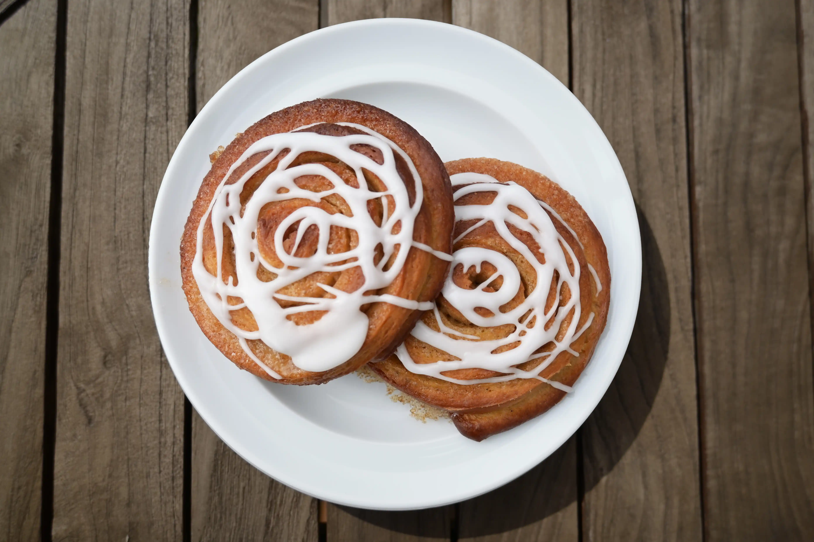

Kanelsnegle
Antal
12 stykker
Forberedelsestid
30 min
Tilberedelsestid
2 timer
Ingredienser
Dej
- 1,5 dl mælk
- 20 g gær
- 100 g smør
- 1 tsk vaniljesukker
- 50 g sukker
- 1 tsk kardemomme
- 1 tsk kanel
- 400 g hvedemel
- 2 æg
- 0,5 tsk salt
Remonce
- 150 g smør
- 100 g sukker
- 75 g rørsukker
- 1 tsk kanel
Glasur
- 100g flormelis
- Kogende vand
Fremgangsmåde
Rør gæren ud i stuetemperaturer mælk. Smelt smør og rør smørret ud i mælken.
Bland vaniljesukker, sukker, salt, kanel, kardemomme og 50 g mel godt sammen med smør, mælk og gær blandingen. Tilsæt hvedemel lidt ad gangen og ælt dejen grundigt. Dejen skal være smidig og blød. Lad dejen hæve i 30 min på køkkenbordet og rør stuetemperaturet smør, sukker, rørsukker og kanel sammen til remonce imens.
Rul dejen ud i en stor rektanglet på et meldrysset bord. Smør remonce på fladen, undtagen af den yderste lange kant. Rul dejen sammen til en rulle. Slut med den yderste del uden remonce.
Skær 2 cm tykke skiver. Placer dem på bagepapir og tryk den yderste kant ind under sig selv. Lad kanelsneglene hæve på køkkenbordet i en time under et viskestykke.
Bag i en forvarmet ovn ved 175 grader varmluft i ca. 17 min. Lad sneglene køle af, inden de pyntes med hvid glasur.